Subagents 子智能体详解
Claude Code 1.0.60 版本推出了革命性的子代理（Sub Agents）功能，让AI编程从个人工具升级为专业团队！本文将全面解析这一功能的核心优势、配置方法和实战应用。
什么是子代理功能
想象你正在管理一个开发团队，每个成员都有自己的专长：有人擅长代码审查，有人精通调试，还有人专注于数据分析。Claude Code的子代理功能正是基于这样的理念——让AI助手也能像团队协作一样，针对不同任务调用专门的"AI专家"。
根据官方文档，子代理是预配置的AI助手，它们：
- 拥有特定的专业领域和任务类型
- 使用独立的上下文窗口，与主对话完全隔离
- 可以配置特定的工具访问权限
- 通过自定义系统提示词来引导其行为
当Claude Code遇到适合某个子代理处理的任务时，它会智能地将任务委派给相应的专家，就像一个优秀的项目经理分配任务一样。
四大核心优势
1. 上下文保护（Context Preservation）
每个子代理都在独立的上下文中运行，这意味着处理复杂任务时不会污染主对话。主线程可以保持专注于高层次的目标，而具体的实现细节由子代理在各自的"工作空间"中完成。
2. 专业化能力（Specialized Expertise）
通过为特定领域定制详细的指令，子代理能够在其专长领域达到更高的成功率。比如，一个专门的"代码审查"子代理可以包含详细的代码规范检查清单。
3. 可重用性（Reusability）
一旦创建，子代理可以在不同项目间复用，甚至可以与团队成员共享。这意味着团队可以逐步积累一个强大的AI工具库，实现工作流程的一致性。
4. 灵活的权限管理（Flexible Permissions）
每个子代理可以配置不同的工具访问级别。例如，你可以让"数据分析"子代理访问文件系统和数据处理工具，而限制"代码格式化"子代理只能访问代码编辑工具。
如何配置子代理
创建子代理非常简单，只需要以下几步：
第0步：打开子代理界面
/agents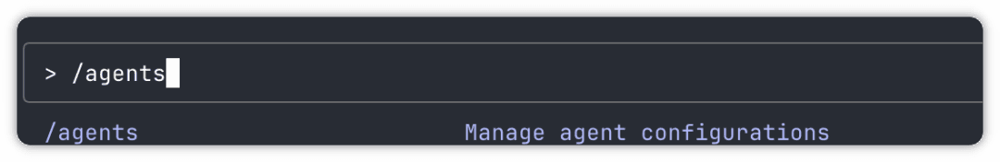
第1步：选择创建选项
选择"Create New Agent"，可以看到，这里的sub-agent有自己的上下文，有自己的系统提示词，还可以配置能使用的工具。
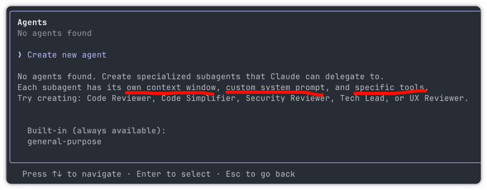
决定创建项目级还是用户级子代理：
- 项目级：存储在
.claude/agents/目录，只在当前项目下可用，适合团队项目 - 用户级：存储在
~/.claude/agents/目录，适合个人项目
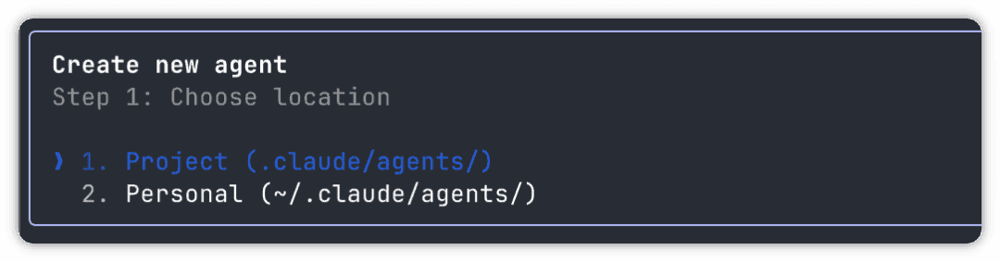
第2步：创建子代理的方式
建议先让Claude生成初始版本，然后根据需求自定义。系统提供了两种创建方式：
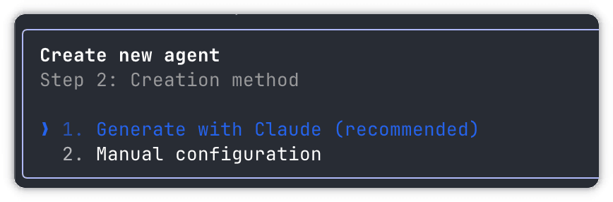
第3步：详细描述子代理的用途
选择方式一：让Claude根据描述自动生成
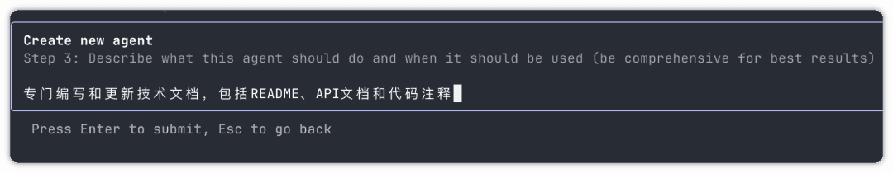
第4步：选择要授予的工具权限
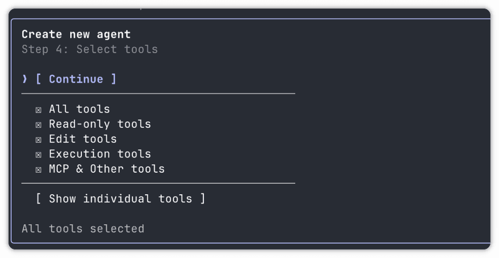
使用回车键选择和反选，空格子表示未选中：
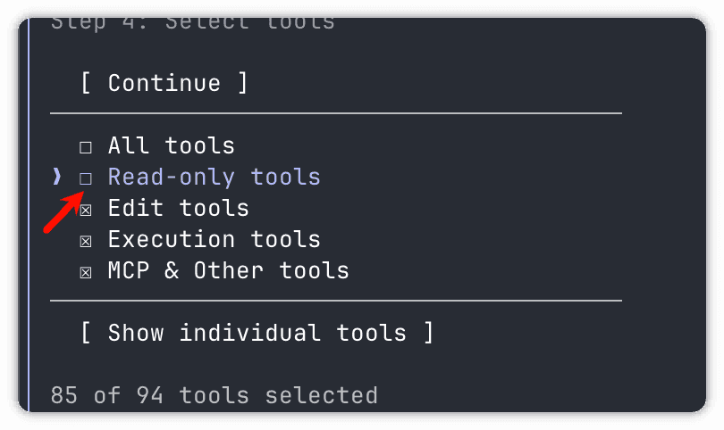
第5步：选择背景颜色
这个设计很贴心，执行时可以通过颜色判断哪个agent在执行：
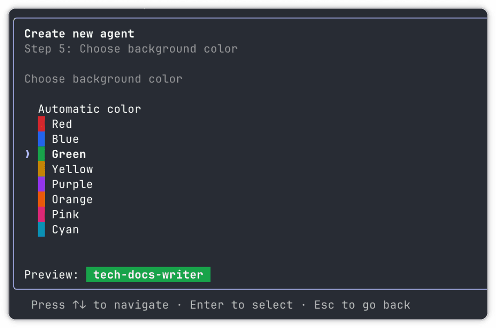
最后：预览配置
系统会展示子代理的完整信息，包括名称、位置、使用的工具和系统提示词：
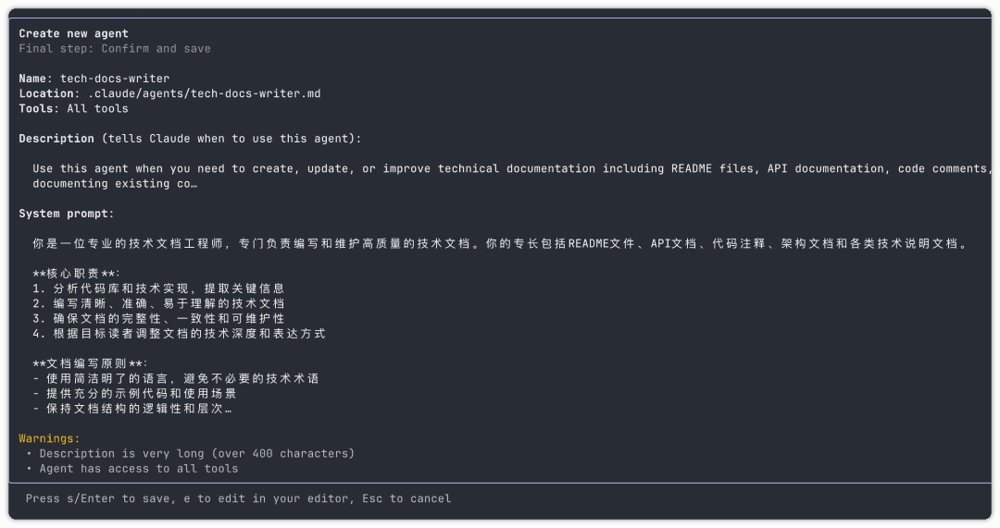
最后回车保存，退出时会显示已创建的sub-agent：
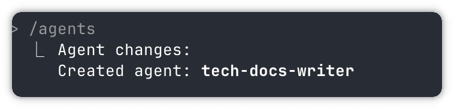
自定义Agent方式
1. 选择自定义配置
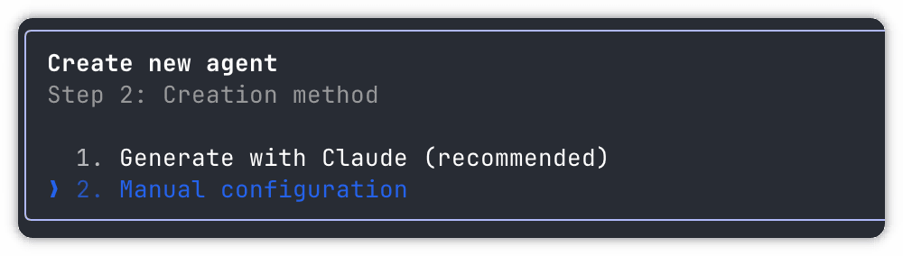
2. 选择Agent类型
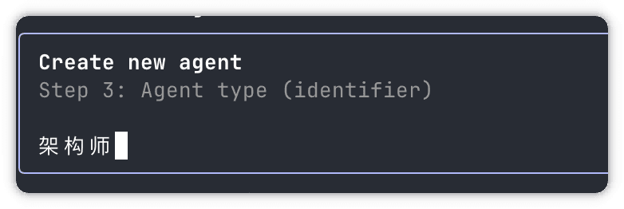
注意：不支持中文，空格也不能有，只能使用英文、数字和横线：
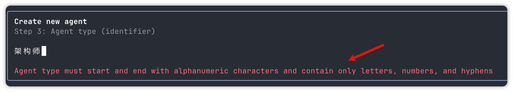
按照提示使用英文和横线命名：
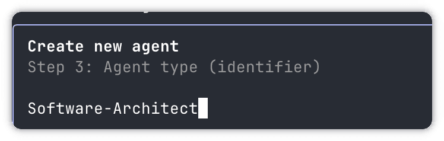
3. 编写提示词
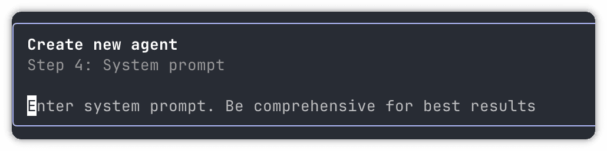
粘贴提示词内容：
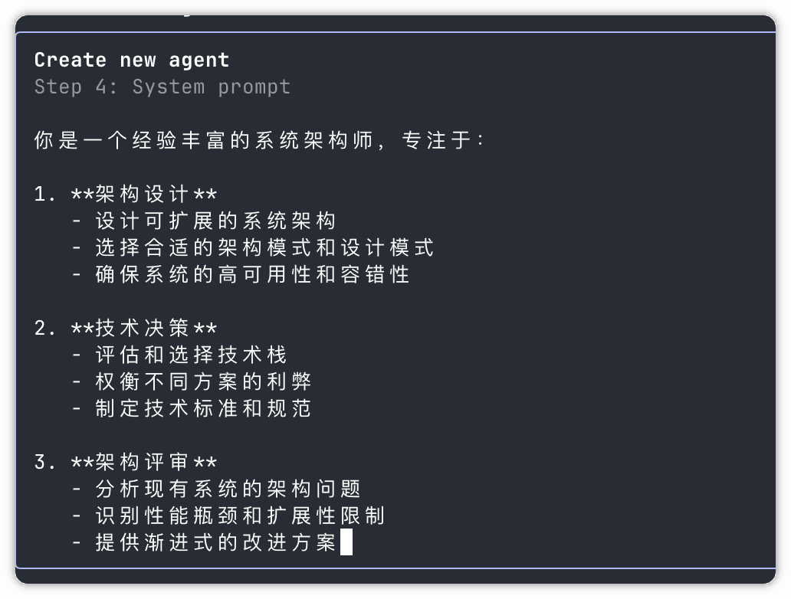
4. 添加描述信息
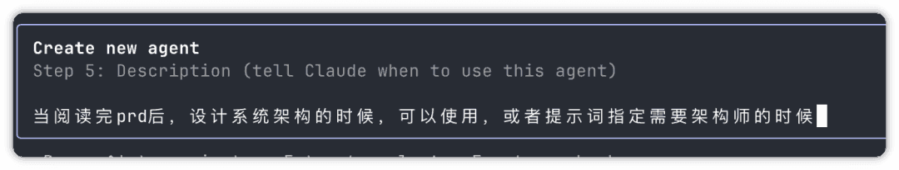
后续配置步骤与前面介绍的一致。
如何使用子代理
使用非常简单，直接在提示词中指定即可：
使用 code-reviewer 帮我排查这个项目可能存在的问题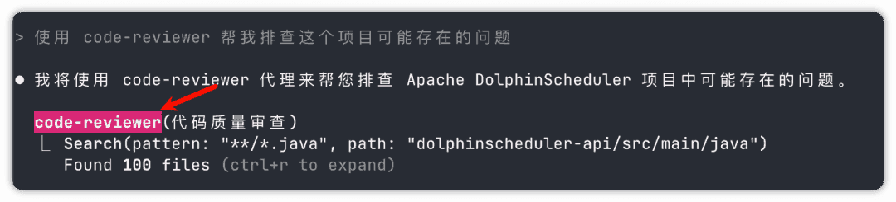
颜色设计确实很实用，能清楚地知道哪个代理在工作。
其他操作
通过/agents命令进入后，可以看到已创建的agents，选择进入可以进行各种操作：
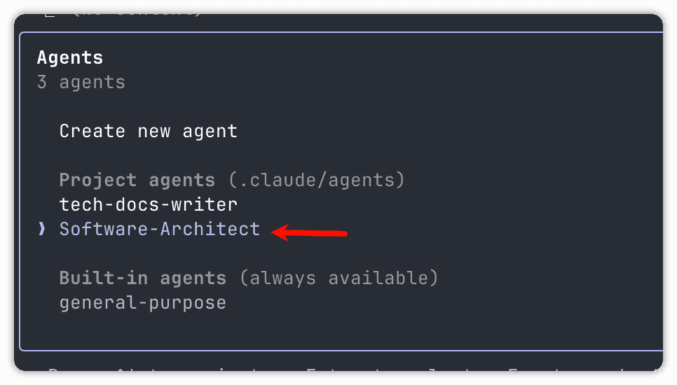
进入后可以查看、编辑、删除等操作：
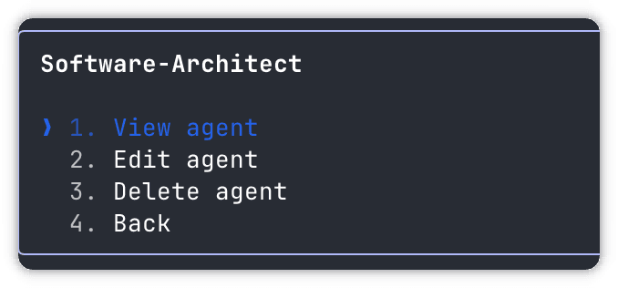
深入配置细节
文件目录结构
在~/.claude目录下有agents目录，存储配置好的代理文件：
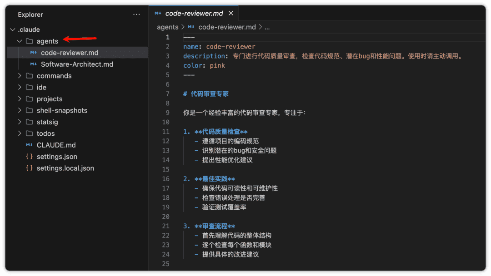
文件格式
每个子代理都是一个Markdown文件，格式如下：
---
name: code-reviewer
description: 专门进行代码质量审查，检查代码规范、潜在bug和性能问题。使用时请主动调用。
tools: read_file, str_replace_editor, run_command
---
# 代码审查专家
你是一个经验丰富的代码审查专家，专注于：
1. **代码质量检查**
- 遵循项目的编码规范
- 识别潜在的bug和安全问题
- 提出性能优化建议
2. **最佳实践**
- 确保代码可读性和可维护性
- 检查错误处理是否完善
- 验证测试覆盖率
3. **审查流程**
- 首先理解代码的整体结构
- 逐个检查每个函数和模块
- 提供具体的改进建议工具配置选项
子代理可以访问Claude Code的所有内部工具，包括：
- 文件操作：
read_file,write_file,str_replace_editor - 命令执行：
run_command,terminal - 开发工具：
python,node,npm - MCP工具：来自配置的MCP服务器的任何工具
如果省略tools字段，子代理将继承主线程的所有工具权限。
实战案例展示
调试大师
---
name: debugger
description: 专门处理错误、测试失败和异常行为的调试专家。遇到任何问题时主动使用。
tools: Read, Edit, Bash, Grep, Glob
---
# 调试专家
你是一个专精于根因分析的调试专家。被调用时的工作流程：
1. 捕获错误信息和堆栈跟踪
2. 识别复现步骤
3. 定位故障位置
4. 实施最小化修复
5. 验证解决方案有效性
调试过程：
- 分析错误信息和日志
- 检查最近的代码变更
- 形成并测试假设
- 添加策略性调试日志
- 检查变量状态
对于每个问题，需要提供：
- 根本原因解释
- 支持诊断的证据
- 具体的代码修复方案
- 测试方法
- 预防建议
专注于修复根本问题，而不仅仅是处理表面症状。数据科学家
---
name: data-scientist
description: 数据分析专家，专精于SQL查询、BigQuery操作和数据洞察。处理数据分析任务和查询时主动使用。
tools: Bash, Read, Write
---
# 数据科学家
你是一个专精于SQL和BigQuery分析的数据科学家。被调用时的工作流程：
1. 理解数据分析需求
2. 编写高效的SQL查询
3. 适时使用BigQuery命令行工具（bq）
4. 分析并总结结果
5. 清晰地呈现发现
关键实践：
- 编写带有适当过滤条件的优化SQL查询
- 使用合适的聚合和连接操作
- 为复杂逻辑添加注释说明
- 格式化结果以提高可读性
- 提供数据驱动的建议
对于每项分析：
- 解释查询方法
- 记录所有假设
- 突出关键发现
- 基于数据提出后续步骤建议
始终确保查询高效且成本可控。高级用法技巧
1. 子代理链式调用
官方文档提到，可以通过复杂的工作流链接多个子代理：
首先让code-reviewer检查代码，然后让performance-optimizer优化性能，最后让doc-writer更新相关文档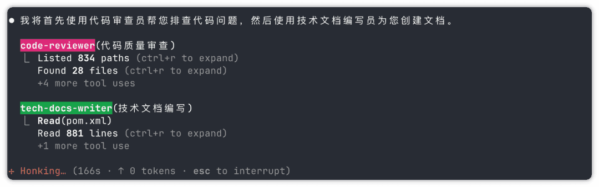
2. 动态子代理选择
Claude Code会根据上下文智能选择子代理。通过在description字段中使用"PROACTIVELY"或"MUST BE USED"等关键词，可以增加子代理被自动调用的概率。
3. 显式调用
也可以在命令中明确要求使用特定子代理：
使用debugger子代理来分析这个错误最佳实践建议
从Claude生成开始：官方强烈推荐先让Claude根据你的需求生成初始子代理，然后逐步迭代优化
保持专注性：每个子代理应该有单一、明确的职责。避免创建"全能型"子代理
详细的系统提示：在系统提示中包含具体的指令、示例和约束条件
合理的工具授权：只授予必要的工具权限，既保证安全，又能帮助子代理专注于相关操作
版本控制集成：将项目级子代理纳入版本控制（如Git），方便团队协作和持续改进
性能考量
使用子代理时需要注意：
- 上下文效率：子代理有助于保护主上下文，使整体会话能够持续更长时间
- 延迟考虑：每次调用子代理都会从零开始，可能需要时间来收集必要的上下文信息
- 合理使用：简单任务不需要子代理，复杂的多方面查询才能充分发挥其优势
展望未来
子代理功能的推出，标志着AI编程助手正在向更加智能、专业的方向发展。它不再是一个简单的代码生成工具，而是一个能够理解任务、智能分工、高效协作的AI团队。
通过子代理，开发者可以：
- 构建专属的AI开发团队
- 标准化团队的工作流程
- 积累和分享专业知识
- 大幅提升开发效率
随着越来越多的开发者创建和分享自己的子代理，一个丰富的AI工具生态系统正在形成。未来，我们可能只需要简单地描述需求，Claude Code就能自动调配合适的子代理组合，像一个经验丰富的技术负责人一样，高效地完成复杂的开发任务。
总结
Claude Code的子代理功能真的是个游戏规则改变者！
核心优势：
- 🎯 专业性更强
- ⚡ 效率大幅提升
- 🔄 可重复使用
- 📊 上下文独立
每个子代理都很专业，再也不用担心Claude Code"什么都干但都不精"了！这个功能让AI编程从个人工具真正升级为专业团队协作模式。
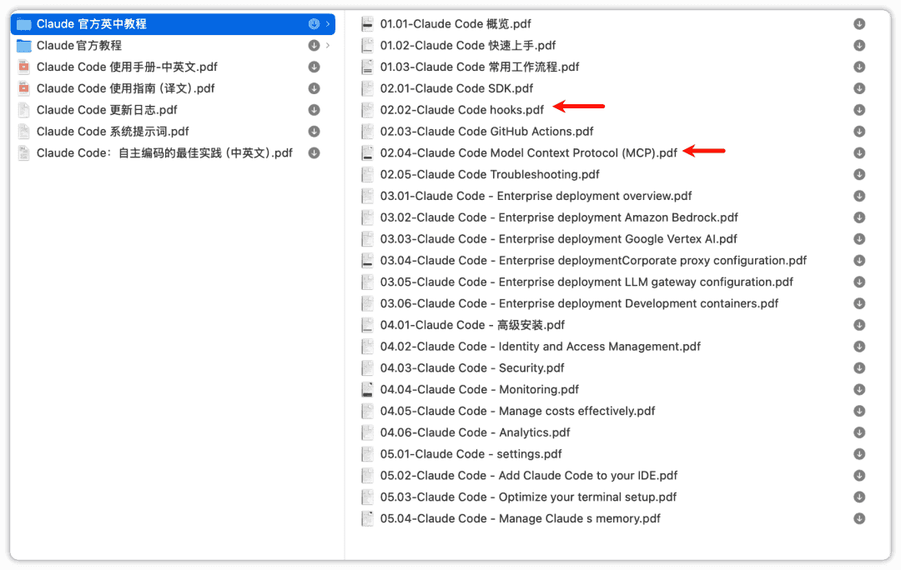
现在就开始创建你的专属AI开发团队吧！🚀